This work is licensed under a Creative Commons Attribution 4.0 International License.
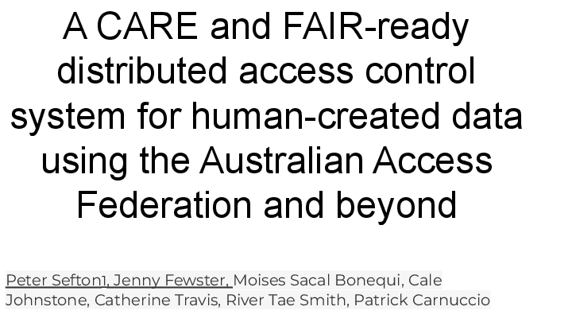

This is write-up of a talk given at eResearch Australasia 2022, delivered by Peter Sefton, with some additional detail.
By: Peter Sefton, Jenny Fewster, Moises Sacal Bonequi, Cale Johnstone, Catherine Travis, River Tae Smith, Patrick Carnuccio
Edited by: Simon Musgrave
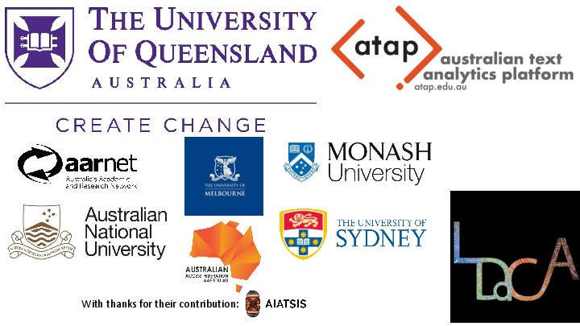

The Language Data Commons of Australia Data Partnerships (LDaCA) and the Australian Text Analytics Platform (ATAP) are building towards a scalable and flexible language data and analytics commons. These projects will be part of the Humanities and Social Sciences Research Data Commons (HASS RDC).
The Data Commons will focus on preservation and discovery of distributed multi-modal language data collections under a variety of governance frameworks. This will include access control that reflects ethical constraints and intellectual property rights, including those of Aboriginal and Torres Strait Islander, migrant and Pacific communities.
The platform will provide workbench services to support computational research, starting with code-notebooks with no-code research tools provided in later phases. Research artefacts such as code and derived data will be made available as fully documented research objects that are re-runnable and rigorously described. Metrics to demonstrate the impact of the platform are projected to include usage statistics, data and article citations. These projects are led by Professor Michael Haugh of the School of Languages and Culture at the University of Queensland with several partner institutions.
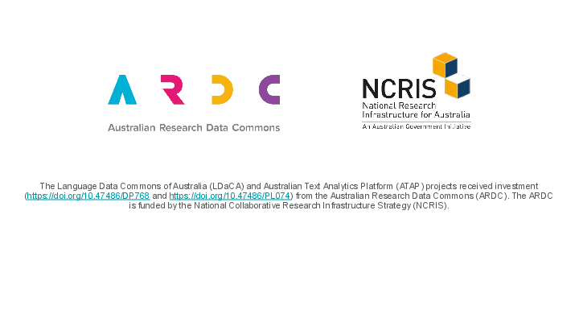

This work is supported by the Australian Research Data Commons.
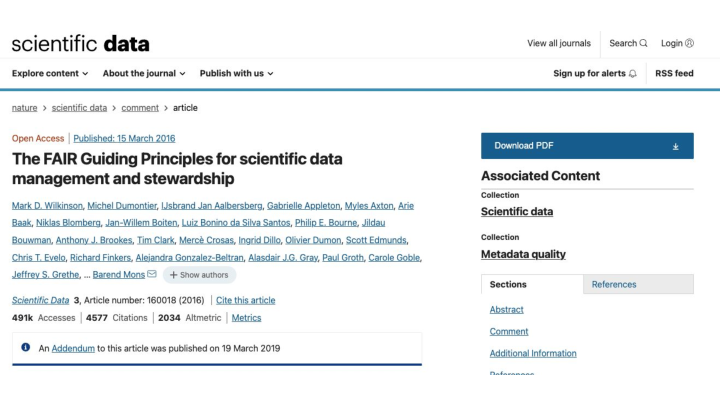

Last year at eResearch Australasia, the Language Data Commons of Australia (LDaCA) team presented a design for a distributed access control system which could look after the A-is-for-accessible in FAIR data; in this presentation we describe and demonstrate a pilot system based on that design, showing how data licenses that allow access by identified groups of people to language data collections can be used with an AAF pilot system (CILogon) to give the right people access to data resources.
The ARDC have invested in a pilot of this work as part of the HASS Research Data Commons and Indigenous Research Capability Program integration activities.
The system has to be able to implement data access policies with real-world complexity and one of our challenges has been developing a data access policy that works across a range of different collections of language data. Here we present a pilot data access policy that we have developed, describing how this policy captures the decisions that must be made by a range of data providers to ensure data accessibility that complies with diverse legal, moral and ethical considerations. We will discuss how the CARE and FAIR principles underpin this work, and compare this work to other projects such as CADRE, which promise to deliver more complex solutions in the future. Initial work is with collections curated in a research context but we will also address community access to these resources.
The idea is to separate safe storage of data from its delivery. Each item in a repository is stored with licensing information in natural language (English at the moment, but could be other languages) and the repository defers access decisions to an Authorization system, where data custodians can design whatever process they like for granting license access. This can range from simple click-through licenses where anyone can agree to license terms, to detailed multi-step workflows where applicants are vetted based on whatever criteria the rights holder wishes; qualifications, membership of a cultural group, have they paid a subscription fee, etc
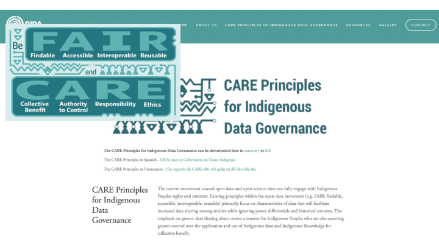

Regarding rights, our project is informed by the CARE principles for Indigenous data which also describe the level of respect which should be given to any data collected from individuals or communities.
The current movement toward open data and open science does not fully engage with Indigenous Peoples rights and interests. Existing principles within the open data movement (e.g. FAIR: findable, accessible, interoperable, reusable) primarily focus on characteristics of data that will facilitate increased data sharing among entities while ignoring power differentials and historical contexts. The emphasis on greater data sharing alone creates a tension for Indigenous Peoples who are also asserting greater control over the application and use of Indigenous data and Indigenous Knowledge for collective benefit
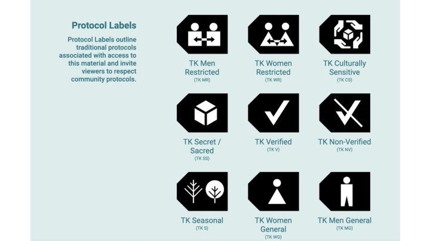

We are designing the system so that it can work with diverse ways of expressing access rights, for example we are considering how the approach described here could be extended based on the likes of the Tribal Knowledge labels, incorporating them into the data licensing framework we discuss below.
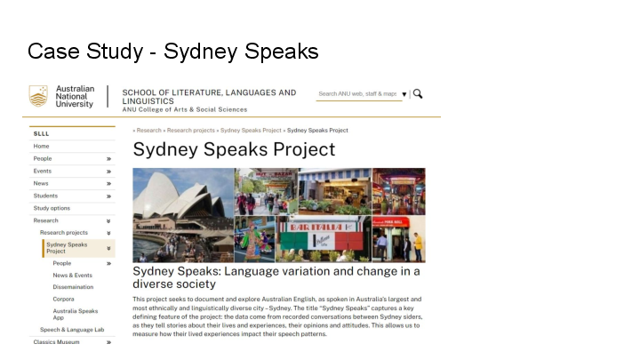

In this talk we look at a case-study with the Sydney Speaks project via LDaCA steering committee member Professor Catherine Travis.
This project seeks to document and explore Australian English, as spoken in Australia’s largest and most ethnically and linguistically diverse city – Sydney. The title “Sydney Speaks” captures a key defining feature of the project: the data come from recorded conversations between Sydney siders, as they tell stories about their lives and experiences, their opinions and attitudes. This allows us to measure how their lived experiences impact their speech patterns. Working within the framework of variationist sociolinguistics, we examine variation in phonetics, grammar and discourse, in an effort to answer questions of fundamental interest both to Australian English, and language variation and change more broadly, including:
- How has Australian English as spoken in Sydney changed over the past 100 years?
- Has the change in the ethnic diversity over that time period (and in particular, over the past 40 years) had any impact on the way Australian English is spoken?
- What affects the way variation and change spread through society - Who are the initiators and who are the leaders in change? - How do social networks function in a modern metropolis? - What social factors are relevant to Sydney speech today, and over time (gender? class? region? ethnic identity?) A better understanding of what kind of variation exists in Australian English, and of how and why Australian English has changed over time can help society be more accepting of speech variation and even help address prejudices based on ways of speaking. Source: http://www.dynamicsoflanguage.edu.au/sydney-speaks/
The collection contains recordings of people speaking, both contemporary and historic.
Because this involved human participants there are restrictions on the distribution of data - a situation we see with lots of studies involving people in a huge range of disciplines.
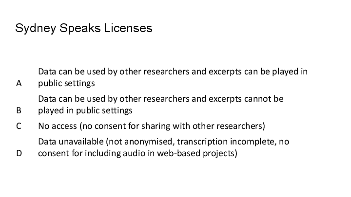

There are four tiers of data access we need to enforce and observe for this data based on the participant agreements and ethics arrangements under which the data were collected.
Concerns about rights and interests are important for any data involving people - and a large amount the data both indigenous and non-indigenous we are using will require access control that ensures that data is shared with the right users under the right conditions.
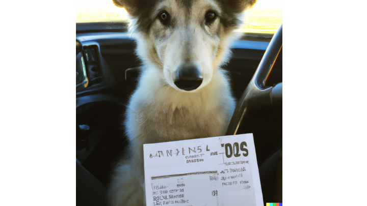

(Image generated by DALLE - prompt: A NSW Driver license for a wolfhound pup named Floki)
Lets go over some basics, starting with licences.
A licence in this context is a natural language document in which a copyright holder sets out the terms and conditions of use for data. Licences may have metadata that describes them, eg a property to say that this is an open licence (and does not require a check when serving data).
A license is not a computer program, or configuration, or an AI entity that can make decisions, it’s a legal document. You may also know this as a “data sharing agreement” or “terms of use”. Examples of licenses we see all the time are the GNU GPL or the various Creative Commons licenses which grant rights to others to redistribute a creative work, and specifies conditions on what changes are permitted.
That said, metadata about a license can be used to automate decision making - if it is labelled as being an open license, then a repository can serve data and include that data, if it is labeled as “closed” or more aptly, “authorization-required” then repository software can perform an authorization step, which we cover in detail later.
In the world of research data generated by or about human participants, licenses can’t always allow unauthenticated access and data redistribution, and they may permit distribution only to certain people, or classes or person. Some data, for example (particularly that which has not been or cannot be de-identified) can only be made available to the original research team.
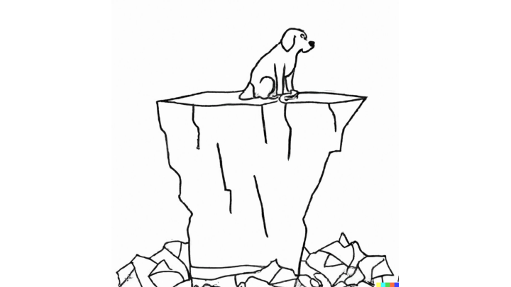

(Dall-e prompt : A sad dog sitting on an iceberg, XKCD)
So, a license is a document that expresses conditions such as “Data can be used by other researchers”, but unfortunately we don’t have systems in the research-data ecosystem which can automatically identify a user as “a researcher” (this may be surprising to some, but the Australian Access Federation can, at this stage, only say that someone has an account with an institution - it can’t tell a professor from a student administration officer and there are certainly no lists of “certified linguists”).
Here are some cold hard facts:
We don’t have an authority that can identify someone as a researcher,
Or a “linguist”,
Or an “anthropologist”,
Or a member of an ARC (Australian Research Council) research project,
The CADRE project is working on systems that will eventually support all these things, but they are not available as services yet, and their initial focus is on government data, so we have to work out ways for our data custodians to make decisions on who is considered an “other researcher” in the absence of attribute-based authentication.
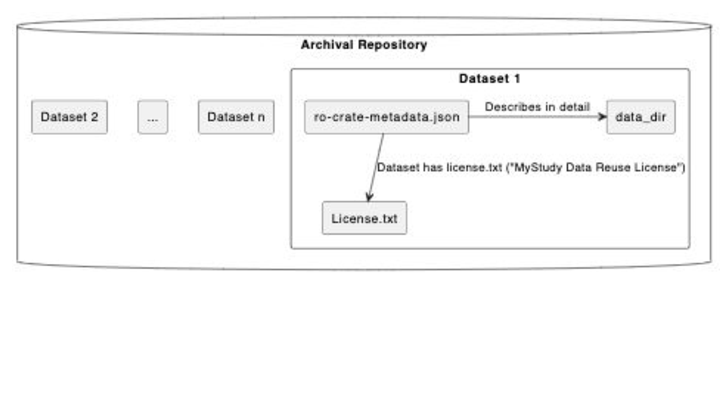

The access control system we have been prototyping is based on licenses.
For any data object, which could be an entire collection, or one set of recordings of a speaker in a speech study, or a set of hand written linguistic field notes from the 1950s, or a novel etc we store a license with it. This means that future archivists / librarians and researchers can work out how to manage the data if the systems we build today for automated access are no longer operational and we give the license an ID which is a URL we can use to identify it uniquely.
This diagram shows how a license is explicitly linked to the data using a metadata description standard known as “Research Object Crate” RO-Crate . Each object in the repository is a crate, with a metadata file that describes the object and (optionally) its component files, including the data license.
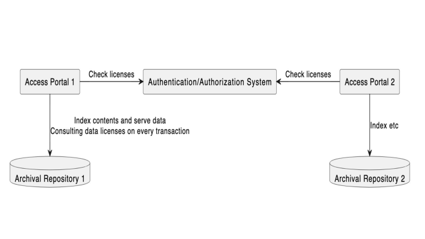

(This diagram has been updated from the one presented at eResearch to show two portals instead of one)
Every item in a repository has a license, which may be an open one like CC Share Alike or a custom license derived from the ethics and participants agreements for a study in the context of local laws and institutional policy.
Using this license, distributed access portals in our architecture can check against an authorization system for each request for data. The portals may both host data with the same licensing but do not need to maintain access control lists.
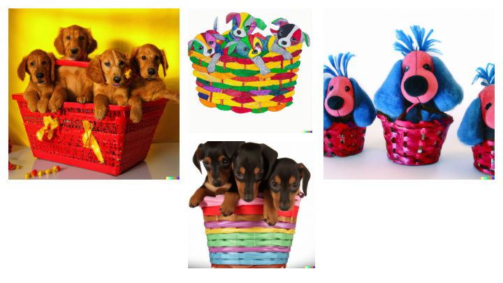

(Images: Various baskets of puppies by DALL-E)
When we first developed access controls for LDaCA in 2021 it was a requirement that data licensing and access control decisions be decoupled from each other, and from particular repository software. The usual approach in repositories is to build in a local access-control system, but this is tied to a particular implementation and will not work in a distributed environment where there are multiple different repositories, and services such as computational resources that researchers need to access to process data.
We could not find an available open source system for managing license-based access to data, so our starting approach used groups as a proxy for granting licences on that basis that all common user-directory services such as LDAP include the concept of user groups.
Scope:
-
simplest possible license based approach to access control
-
NOT attempting to be attribute based as that is not currently feasible within our project scope (see CADRE for progress in that direction)
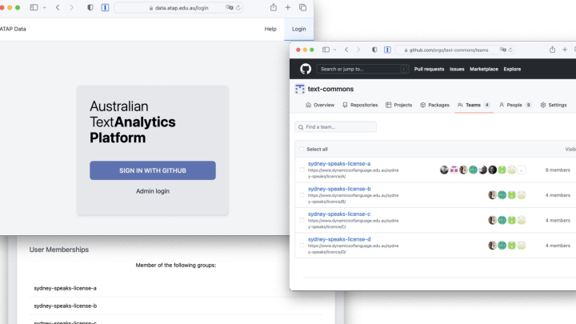

The first prototype, which we presented at eResearch Australasia last year was a proof-of-concept Github based system. This demonstrated that authorization can be delegated from a repository to an external service. For each of the Sydney Speaks licenses there was a Github group (organization). The repository, when requested to serve data would get the user to login using the Github Authentication services, then check if the user was in the correct license group.
This worked, but there were issues with this approach:
-
There are no workflow options (unless we build a workflow system), just adding people to a Github organisation to pre-authorize them
-
The system only supported a single logon service, which is not widely used in academia or by community groups
So, we talked to the our colleagues at the Australian Access Federation (AAF), about a supported, research-sector-wide service.
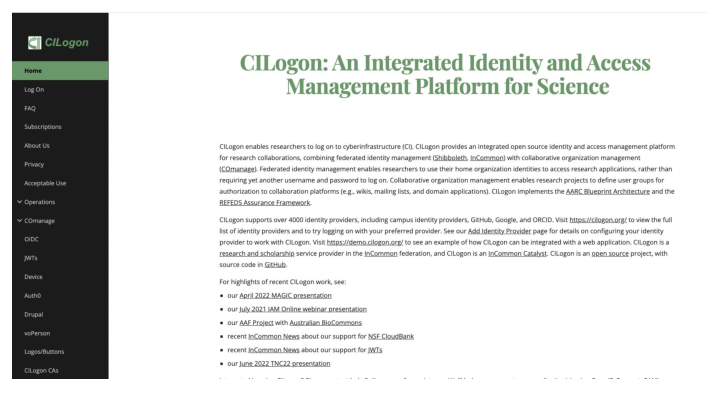

The AAF, as it happened were already working with other research groups on a service called CILogon (hosted in the USA initially, but soon to be hosted in Australia), like Github, this service has groups (which was our way of associating users with licenses in the absence of a specific license-granting service), but also allows users to log in with a variety of Authentication providers, including research institutions, via the Australian Access Federation as well as social logins such as Google and Microsoft (and our old friend Github).
Again this worked, but the current version of CILogon does not have particularly easy-to-use ways for a license-holder to create groups - there are a number of abstract constructs to deal with and there is currently no way to build an approval workflow using the web interface, so as with the Github trial we would have needed to build this part (all of this may change, as the software is under constant development).
There is a nine minute silent video of what this looked like on YouTube for those who are really interested.
AAF is engaging with our project on the following:
- a cloud-based authentication and authorisation infrastructure (AAI) to support the needs of the project
- understand and develop business process documentation for authorising access to data and services
- configure the AAI to support these business processes and to develop extensions to facilitate new functionality that may be required
- create a set of policies, standards and guidelines for managing researchers’ identity and access management
- develop support documentation, train community representatives to operate the platform, and provide support to the community managers. The AAF has recommended CILogon & REMS as potential solutions to investigate & prototype
CILogon is a federated identity management platform that provides the following features: support for institutional and community logins cross-institutional and community collaboration federated identity and group management a community management dashboard OIDC connectors for downstream services that support authorisation claims for services like REMS BinderHub JupyterHub LDaCA Dashboard
REMS (Resource Entitlement Management System) is a tool to help researchers browse resources such as datasets relevant to their research and to manage the application process for access to the resources.
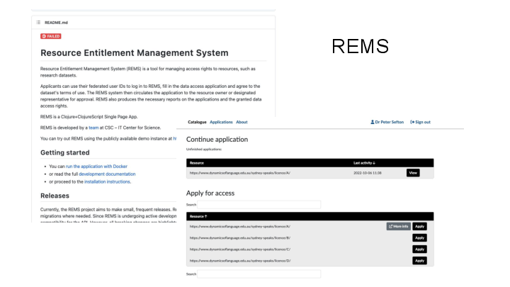

Recently (after the abstract for this presentation was submitted) the AAF team made us aware of the Resource Entitlement Management System, REMS, which is an open source application out of Finland. This software is the missing link for LDaCA in that it allows a data custodian to grant licenses to users. And it works with CILogon as an Authentication layer so we can let users log in using a variety of services.
At the core of REMS is a set of Licenses which can then be associated with Resources - in our design this is (almost always) a one-to-one correspondence, for example we would have a licence “Sydney Speaks Data Researcher Access License” corresponding to resource that represents ALL data with that licence. These Resources can then be made available through a catalog, and workflows can be set up for pre-authorization processes ranging from single-click authorizations where a user just accepts a licence and a bot approves it, to complex forms where users upload credentials and one or more data custodians approve their request, and grant them the licence.
It also has features for revoking permissions, and has a full API so admin tasks can be automated (for us that’s in the future).
Once a user has been granted a license in a pre-authorization process then a repository can authorize access to a resource by checking with REMS to see if a given user is pre-authorized. That is, has been granted a license. Note that users do not have to find REMS on their own - they will be directed to it from data and computing services when they need to apply for pre-authorization.
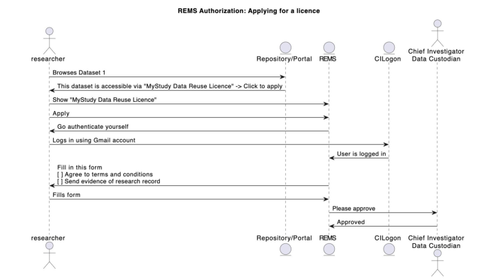

This interaction diagram shows the flow involved in a user applying for a data license via REMS.
Not shown here are some design and preparation steps:
-
The research team read their ethics approval and participant agreements and craft one or more access agreements (AKA licenses) for a data set (NOTE: If the data can be made available automatically with just a license attached, such as when all parties have agreed that data can be Creative commons licensed, or the data is in the public domain then the following steps are not required)
-
The research team and support staff add the license to REMS, creating a “resource” a virtual offering that corresponds to any dataset that has the above license
-
The research team add a workflow to REMS - this could range from an auto-approved click through where users can agree to license terms, through to detailed (manual) checking of their credentials.
The next slide shows the interactions involved in accessing data once a user has been granted the license license.
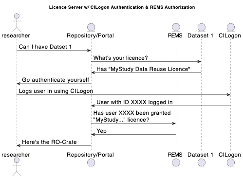

This diagram shows the “access-control dance” for a user who has been granted a license in REMS obtaining access to a dataset at a data portal which gives access to data in a repository or archive.
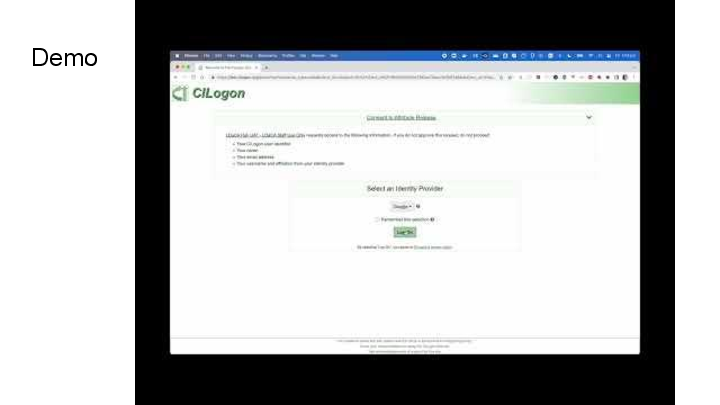

In this video we demonstrate how to use REMS and how does a user request access to an LDaCA resource.
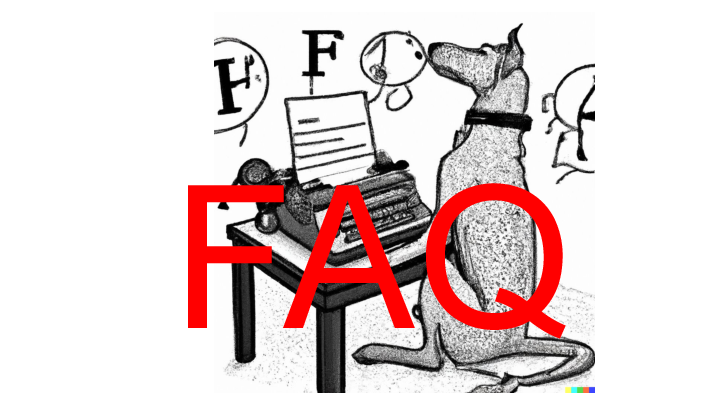

(This section was added after the conference, to try to summarize the discussion and clarify requirements by starting an FAQ on this approach)
Q Why not "just" implement an access control list (ACL) in the repository?
There are a few reasons for the distributed approach we have taken in LDaCA:
-
ACLs need maintenance over time - people's identities change, they retire and die, so storing a list of identifiers such as email addresses alongside content is not a viable long-term preservation strategy. Rather, we will encourage data custodians to describe in words what are permitted uses for the data, and by whom, in a license, then allow whomever is the current data custodian to manage that access in a separate administrative system. We expect these administrative systems to be ephemeral, and change over time but also to generate less friction over time as standards are developed. Expected future benefits of concentrating these processes will include that people do not have to prove the same claims they make about themselves multiple times and that it is easier for data custodians to authorize access.
-
LDaCA data will be stored in a variety of places with separate portal applications serving data for specific purposes; if these systems all have in-built authorization schemes, even if they are the same, then we have the problem of synchronizing access control lists around a network of services.
-
Accessing data that requires some sort of authorization process is not language or humanities specific, so working with an existing application that can handle pre-authorization workflows and access-control authorization decisions is an attractive choice and should allow LDaCA to take advantage of centrally managed services with functionality that improves over time rather than having to develop and maintain our own systems.
-
If complex access controls are implemented inside a system then there is a risk that data becomes stranded inside that system and cannot be reused without completely re-implementing the access control. For example, imagine an archive of cultural material with complex access controls encoded into the business logic such as “this item is accessible only to male initiates”. Applications like this need to store user accounts with attributes on both data and user records that can be used to authorize access. There is a high risk of data being stranded in a system such as this if it is no longer supported. This will be mitigated somewhat if the rules are also expressed as licenses, perhaps a composition of Traditional Knowledge (TK) Labels - but the access system is baked-in to the application and not portable.
Q: Yes but why does data need to have a license if we already have access controls?
The point of Research Data Commons projects like LDaCA is to create an ecosystem where data can be re-used. For language data, this means that users, including researchers and community members, will be able to download data for certain authorised purposes and activities. The license is the way that data custodians communicate to data users (and future administrators) what those purposes activities are.
A license, which is always packaged with data will allow:
-
A user to inspect a five-year-old dataset in their downloads folder and work out what they are allowed to do with it.
-
An IT professional to clean up laptop that has been handed in by (or seized from – it happens) a departing faculty member.
-
A developer to re-create an access control replacing a decommissioned system.
Q So many licenses! Sounds like a lot of work!
We expect that the overhead of writing licenses will diminish greatly over time and standard clauses and complete licenses will be established. A data depositor will be able to choose from a set of standard license terms (such as a standard “restricted to CIs and participants license” for a given repository, using that as a template to mint their own license for a given data set with its own name and ID. The user can choose a standard way of adding pre-authorized licensees (such as email invitations). This ID can then be used by an authorization system.
Q So you have centralized authorization into a system that grants licenses doesn't that mean you are locked-in to that system?
No, and Yes
No, there is no lock in regarding the list of Licenses and pre-authorized users; licenses and access control lists can be exported via an API so it is possible to import them into another system or save them for audit purposes.
Yes, there is lockin, in that at this stage the workflow used to give access to users is specific to the system (such as REMS)
But, because our process requires a governance step first in writing a license, then there is a statement of intent for re-building those processes later if needed - a step which is very likely to be missing in a system with built-in access control.
Also, over time, we expect the administrative burden of constructing workflows will become less as standards are developed for a couple of things:
-
Licenses can be made less complex (particularly in the context of academic studies) if they specify re-use by particular known cohorts in advance - this comes down to improving the design of studies to encourage data reuse. This may also help to simplify academic ethics processes in the medium to long term.
-
The CADRE project is looking to improve pre-authorization workflows that automatically source relevant information about potential users - fetching their publication record, and potentially remembering what certifications they have, so these attributes can be used and reused for decision making. It is conceivable that this approach might be useful in cultural contexts as well to allow data custodians to manage data sharing - this is a discussion we have yet to have in the broader HASS RDC.
Q What if I have a really simple requirement like giving access to just a couple of people - doesn’t this license approach just add complexity?
If a data item needs to be locked down to a small group of people, say the chief investigator and the participants in a recorded dialogue then an obvious implementation is to maintain a small access control list (ACL) for the item. But all of the issues identified above with application-specific ACLs are the same, no matter the size of the cohort: the data set can’t be access controlled outside of its home system. If the system is no longer running then the data may be completely inaccessible, and if there is no license document stored with the data setting out terms of re-use in general terms then there is no indication to future administrators about who, if anyone, should have access of the data.
Q: We don’t need a license, we have a “terms of use”
Same thing. Terms of use for data are what a license does. We are designing our systems so that all the relevant terms and conditions go in one place to minimize confusion.
The final three slides have been contributed by co-author Patrick.
These slides briefly outline the AAF process for the next phase that will provide the foundations for the development of the service and the creation of those policies to support the community and the service.
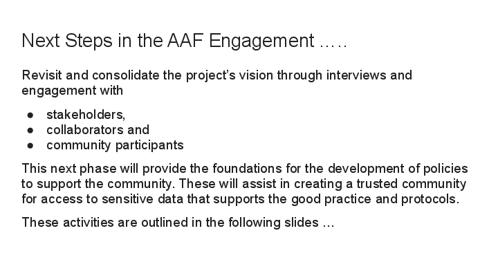

This process will support the project to deliver a viable service that meets researchers’ needs and is trusted by the community and the participants to safely distribute data to authorised persons.
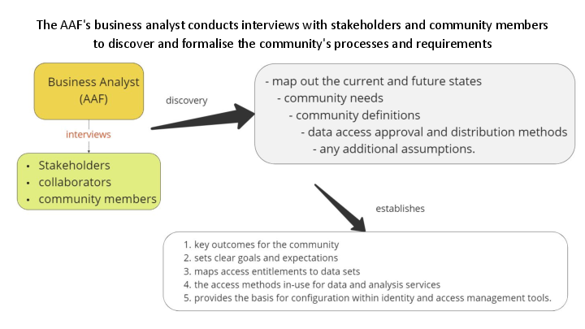

The AAF’s business analyst is conducting interviews with the key stakeholders. This discovery process will collect information on the current and the “to-be” state of the service.
Together these will establish goals and expectations and provide the basis for further prototyping a service that meets stakeholder needs.
The process will facilitate the building of a service that empowers the data custodians, the communities and participants to manage access.
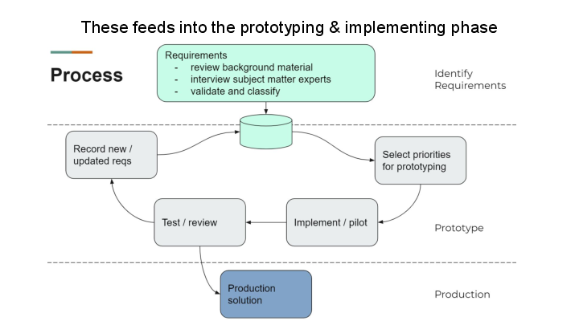

The basis for prototyping is iterative: Identify Prioritise Pilot Review Update requirements
This leads to a production service that meets participant, community and researcher requirements and unifies the services, policies and trust framework for the community.
Comments
comments powered by Disqus